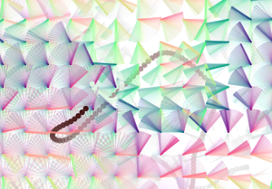
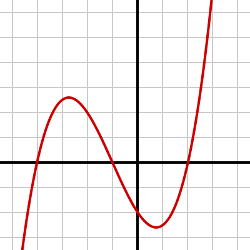

Flow Fields
November 20th, 2018
Flow Field is one of the earliest sets of generative art programs that I've made, based off of Dan Schiffman's P5JS tutorial series. At the time of making this, I was particularly intrigued by the use of particle systems to simulate movement and forces; I wanted to use Perlin Noise to create a field of "movement", enabling particles inside of this field to follow naturally determined paths.

I generated the map of Perlin noise by setting a vector at each x,y coordinate of the canvas; the angle of the vector is of the function
The perlin noise function is similar to the random function except that the perlin noise function is differentiable, which means that between any two points, say
There will be a set of points between the two times such that the function will always be continuous (no breaks), and will never have a an infinite vertical slope (no jumping between values). Below is an example of a differentiable function.

This effect is displayed in our noise function by the direction and color of our vectors of the flowfield; each one is slightly offset to each other relative to their position and to time. None of them will immediately change direction.
This means that a particle in the field will experience gradual changes in its force, allowing it move much like an object in a current of water.
I created a particle class whose movement is based on the "force" of the vector in which the particle exists at (think in units of cells, [0, 0], etc) and added some color. Here are the results!
For the ones with the particles hidden, the field looks a lot like a heatmap, although the color is based on the direction and the time of the vector rather than its magnitude. I would like to create another program in the future that uses a sort of gravity as the force, and have the color be based on the magnitude of that gravity. For example, I could use a grayscale image as a base and the darker the pixel the stronger the gravity...